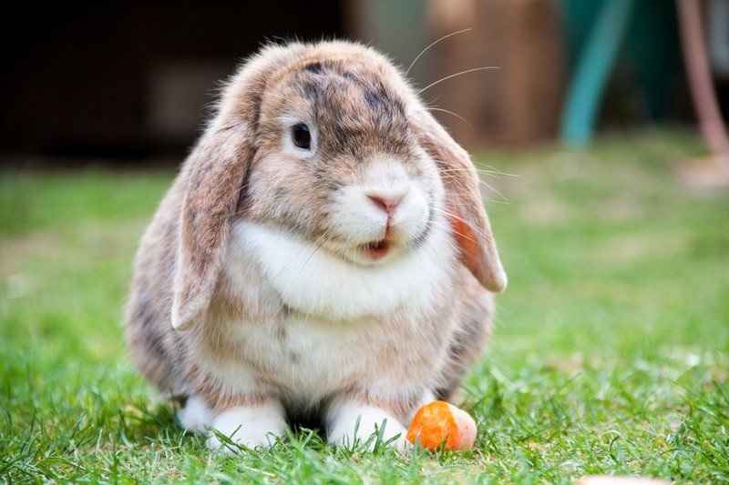
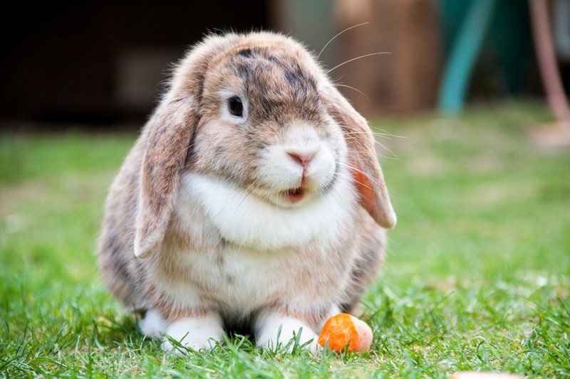

Mundo animal
Conoce la fauna de tu planeta.
La fauna es el conjunto de especies animales que habitan en una región geográfica, que son propias de un período geológico. Esta depende tanto de factores abióticos como de factores bióticos. Entre éstos sobresalen las relaciones posibles de competencia o de depredación entre las especies. Los animales suelen ser sensibles a las perturbaciones que alteran su hábitat; por ello, un cambio en la fauna de un ecosistema indica una alteración en uno o varios de los factores de este.
La fauna se divide en distintos tipos de acuerdo al origen geográfico de donde provienen las especies que habitan un ecosistema o biotopo. La fauna silvestre o salvaje es aquella que vive y no ha sido domesticada.
La fauna en proceso de domesticación, está integrada por aquellos animales silvestres, sean autóctonos, exóticos o importados, criados zootécnicamente bajo el dominio del hombre en zoo criaderos bajo condiciones de cautiverio o semicautiverio, que a través de las generaciones van perdiendo su carácter de salvajes para convertirse en domésticos y ser explotados con iguales fines que estos últimos. Se encuentran en este grupo poblaciones de coipo o nutria criolla, chinchilla, zorro plateado, visón, etc. Debido al hecho de que aún no pueden ser consideradas especies domésticas, tienen que ser encuadradas para su gestión como variedades de poblaciones silvestres manejadas mediante la zoocría y, por lo tanto, manejadas como especies silvestres de una determinada zona geográfica.
Los animales llevan a cabo las siguientes funciones esenciales: alimentación, respiración, circulación, excreción, respuesta, movimiento y reproducción:
- Alimentación: La mayoría de los animales no pueden absorber comida; la ingieren. Los animales han evolucionado de diversas formas para alimentarse. Los herbívoros comen plantas, los carnívoros comen otros animales; y los omnívoros se alimentan tanto de plantas como de animales. Los detritívoros comen material vegetal y animal en descomposición. Los comedores por filtración son animales acuáticos que cuelan minúsculos organismos que flotan en el agua. Los animales también forman relaciones simbióticas, en las que dos especies viven en estrecha asociación mutua. Por ejemplo un parásito es un tipo de simbionte que vive dentro o sobre otro organismo, el huésped. El parásito se alimenta del huésped y lo dañaLa mayoría de los animales no pueden absorber comida; la ingieren. Los animales han evolucionado de diversas formas para alimentarse. Los herbívoros comen plantas, los carnívoros comen otros animales; y los omnívoros se alimentan tanto de plantas como de animales. Los detritívoros comen material vegetal y animal en descomposición. Los comedores por filtración son animales acuáticos que cuelan minúsculos organismos que flotan en el agua. Los animales también forman relaciones simbióticas, en las que dos especies viven en estrecha asociación mutua. Por ejemplo un parásito es un tipo de simbionte que vive dentro o sobre otro organismo, el huésped. El parásito se alimenta del huésped y lo daña.
- Respiración: No importa si viven en el agua o en la tierra, todos los animales respiran; esto significa que pueden tomar oxígeno y despedir dióxido de carbono. Gracias a sus cuerpos muy simples y de delgadas paredes, algunos animales utilizan la difusión de estas sustancias a través de la piel. Sin embargo, la mayoría de los animales han evolucionado complejos tejidos y sistemas orgánicos para la respiración.
- Circulación: Muchos animales acuáticos pequeños, como algunos gusanos, utilizan solo la difusión para transportar oxígeno y moléculas de nutrientes a todas sus células, y recoger de ellas los productos de desecho. La difusión basta porque estos animales apenas tienen un espesor de unas cuantas células. Sin embargo, los animales más grandes poseen algún tipo de sistema circulatorio para desplazar sustancias por el interior de sus cuerpos.
- Excreción: Un producto de desecho primario de las células es el amoniaco, sustancia venenosa que contiene nitrógeno. La acumulación de amoniaco y otros productos de desecho podrían matar a un animal. La mayoría de los animales poseen un sistema excretor que bien elimina amoniaco o bien lo transforma en una sustancia menos tóxica que se elimina del cuerpo. Gracias a que eliminan los desechos metabólicos, los sistemas excretores ayudan a mantener la homeóstasis. Los sistemas excretores varían, desde células que bombean agua fuera del cuerpo hasta órganos complejos como riñones.
- Respuesta: Los animales usan células especializadas, llamadas células nerviosas, para responder a los sucesos de su medio ambiente. En la mayoría de los animales, las células nerviosas están conectadas entre sí para formar un sistema nervioso. Algunas células llamadas receptores, responden a sonidos, luz y otros estímulos externos. Otras células nerviosas procesan información y determinan la respuesta del animal. La organización de las células nerviosas dentro del cuerpo cambia dramáticamente de un fílum a otro.
- Movimiento: Algunos animales adultos permanecen fijos en un sitio. Aunque muchos tienen movilidad. Sin embargo tanto los fijos como los más veloces normalmente poseen músculos o tejidos musculares que se acortan para generar fuerza. La contracción muscular permite que los animales movibles se desplacen, a menudo en combinación con una estructura llamada esqueleto. Los músculos también ayudan a los animales, aún los más sedentarios, a comer y bombear agua y otros líquidos fuera del cuerpo.
- Reproducción: La mayoría de los animales se reproducen sexualmente mediante la producción de gametos haploides. La reproducción sexual ayuda a crear y mantener la diversidad genética de una población. Por consiguiente, ayuda a mejorar la capacidad de una especie para evolucionar con los cambios del medio ambiente. Muchos invertebrados también pueden reproducirse asexualmente. La reproducción asexual da origen a descendiente genéticamente idénticos a los progenitores. Esta forma de reproducción permite que los animales aumenten rápidamente en cantidad
Al igual que tú, los animales tienen familias. Por ejemplo, los felinos:
Gato doméstico
Gato cerval
León
Vida salvaje.
¿Cuáles animales reconoces?

 
